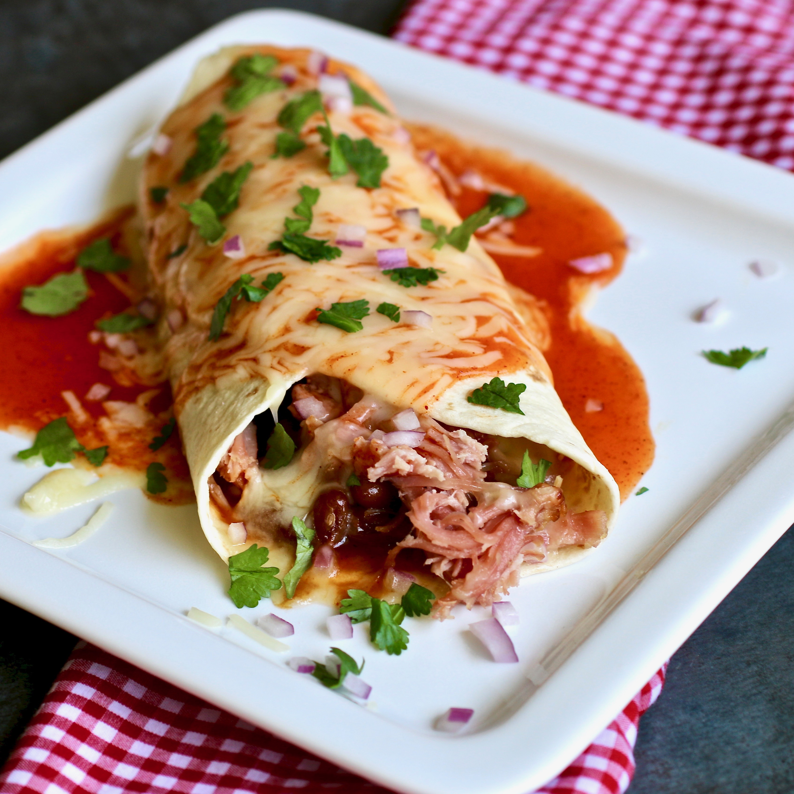

Pulled Pork Burrito

Description
A tasty way to use up your leftovers from a pulled pork! Goes well with a little coleslaw.
Ingredients
- 1 can baked beans
- 8 soft flour tortillas
- 1 small onion
- 1 pound pulled pork, heated
- 1 package shredded cheese
- 1 can mild enchilada sauce
Steps
- Pour beans into a pot and bring to a simmer over medium-low heat.
- Place a tortilla on a microwave-safe plate, sprinkle with onion, 2 tablespoons beans, and 2 to 3 tablespoons pulled pork. Sprinkle with Monterey Jack cheese, and roll the tortilla closed. Drizzle over 2 tablespoons of enchilada sauce, and sprinkle with more cheese.
- Microwave until heated through and cheese is melted, about 1 minute. Repeat with remaining tortillas and filling ingredients.